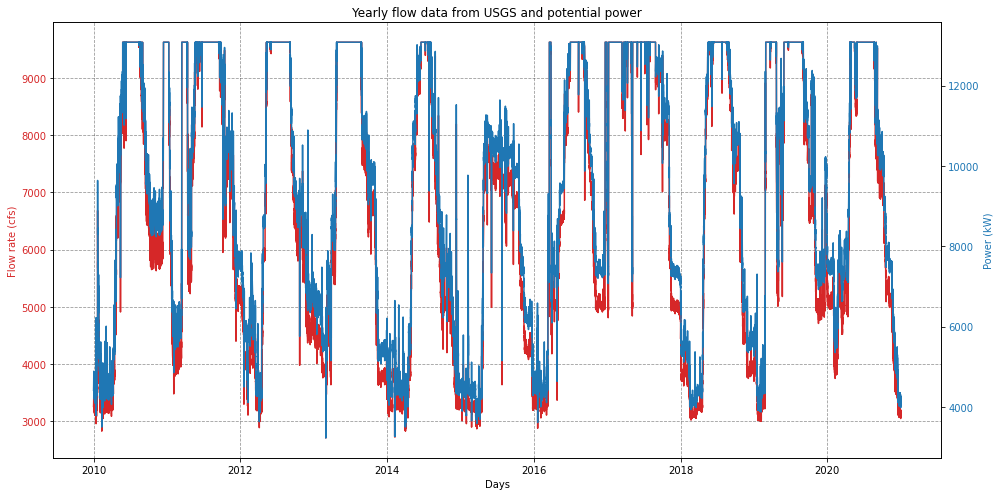

Flow Input Options
Contents
Flow Input Options¶
HydroGenerate allows entering flow in multiple formats. More advance functionality is avaliable when a time series of flow is avaliable.
Using hydropower_type = Diversion allows computing hydropower potential for a diversion or run-of-river project.
from HydroGenerate.hydropower_potential import calculate_hp_potential
import numpy as np
import pandas as pd
import matplotlib.pyplot as plt
Flow as a numpy array¶
When flow is a numpy array, HydroGenerate can select a design flow and calculate nameplate capacity, effiiency, and head losses for the given vlues of flow.
# Head, power, and length of penstock are known. Multiple values of flow are available, the design flow is not known.
# In this scenario HydroGenerate will select a turbine, compute efficiency for the given flow values,
# design flow based on a percent of exceedance, penstock diameter (assuming steel if no material is given),
# head loss for all flows, rater power,
# power a given range of flow,
flow = pd.read_csv('data_test.csv')['discharge_cfs'].to_numpy() # cfs
head = 20 # ft
power = None
penstock_length = 50 # ft
hp_type = 'Diversion'
pctime_runfull= 20 # percent of time the turbine is running full - default is 30%
# Note: decreasing the percent of time the turbine will run full will result in a
# larger system (rated power and cost)
hp = calculate_hp_potential(flow= flow, rated_power= power, head= head,
penstock_headloss_calculation= True,
hydropower_type= hp_type, penstock_length= penstock_length,
pctime_runfull= pctime_runfull)
# Explore output
print('Design flow (cfs):', hp.design_flow)
print('Head_loss at design flow (ft):', round(hp.penstock_design_headloss, 2))
print('Turbine type:', hp.turbine_type)
print('Rated Power (Kw):', round(hp.rated_power, 2))
print('Net head (ft):', round(hp.net_head, 2))
print('Generator Efficiency:',hp.generator_efficiency)
print('Head Loss method:',hp.penstock_headloss_method)
print('Penstock length (ft):', hp.penstock_length)
print('Penstock diameter (ft):', round(hp.penstock_diameter, 2))
print('Runner diameter (ft):', round(hp.runner_diameter, 2))
print('\nFlow range evaluated (cfs):', np.round(hp.flow, 1))
print('Turbine Efficiency for the given flow range:', np.round(hp.turbine_efficiency ,3))
print('Power (kW) for the given flow range:', np.round(hp.power, 1))
Design flow (cfs): 10800.0
Head_loss at design flow (ft): 1.88
Turbine type: Kaplan
Rated Power (Kw): 14828.83
Net head (ft): 18.12
Generator Efficiency: 0.98
Head Loss method: Darcy-Weisbach
Penstock length (ft): 50.0
Penstock diameter (ft): 18.73
Runner diameter (ft): 20.16
Flow range evaluated (cfs): [3260. 3270. 3250. ... 3170. 3100. 3150.]
Turbine Efficiency for the given flow range: [0.768 0.77 0.766 ... 0.751 0.736 0.747]
Power (kW) for the given flow range: [4118.3 4140.3 4096.2 ... 3917.7 3759.3 3872.7]
Flow as Pandas dataframe with a datetime index - Additional functionality.¶
# 2.1) Using flow as a pandas dataframe adds annual energy calculation
# Note: When using a pandas dataframe as flow data, set the datetime index before
# using HydroGenerate. (https://pandas.pydata.org/docs/reference/api/pandas.DatetimeIndex.html)
flow = pd.read_csv('data_test.csv') # pandas data frame
flow['dateTime'] = pd.to_datetime(flow['dateTime']) # preprocessing convert to datetime
flow = flow.set_index('dateTime') # set datetime index # flolw is in cfs
head = 20 # ft
power = None
penstock_length = 50 # ft
hp_type = 'Diversion'
hp = calculate_hp_potential(flow= flow, rated_power= power, head= head,
pctime_runfull = 30,
penstock_headloss_calculation= True,
design_flow= None,
electricity_sell_price = 0.05,
resource_category= 'CanalConduit',
hydropower_type= hp_type, penstock_length= penstock_length,
flow_column= 'discharge_cfs', annual_caclulation= True)
pd.set_option('display.max_columns', 10) #
pd.set_option('display.width', 1000)
# Explore output
print('Design flow (cfs):', hp.design_flow)
print('Head_loss at design flow (ft):', round(hp.penstock_design_headloss, 2))
print('Turbine type:', hp.turbine_type)
print('Rated Power (Kw):', round(hp.rated_power, 2))
print('Net head (ft):', round(hp.net_head, 2))
print('Generator Efficiency:',hp.generator_efficiency)
print('Head Loss method:',hp.penstock_headloss_method)
print('Penstock length (ft):', hp.penstock_length)
print('Penstock diameter (ft):', round(hp.penstock_diameter,2))
print('Runner diameter (ft):', round(hp.runner_diameter,2))
print('\nPandas dataframe output: \n', hp.dataframe_output)
print('Annual output: \n', hp.annual_dataframe_output)
Design flow (cfs): 9620.0
Head_loss at design flow (ft): 1.96
Turbine type: Kaplan
Rated Power (Kw): 13142.39
Net head (ft): 18.04
Generator Efficiency: 0.98
Head Loss method: Darcy-Weisbach
Penstock length (ft): 50.0
Penstock diameter (ft): 17.75
Runner diameter (ft): 19.08
Pandas dataframe output:
discharge_cfs site_id power_kW turbine_flow_cfs efficiency energy_kWh
dateTime
2010-01-01 08:00:00+00:00 3260.0 11370500 4417.413411 3260.0 0.825791 NaN
2010-01-01 08:15:00+00:00 3270.0 11370500 4437.662487 3270.0 0.827097 1109.415622
2010-01-01 08:30:00+00:00 3250.0 11370500 4397.114770 3250.0 0.824469 1099.278692
2010-01-01 08:45:00+00:00 3270.0 11370500 4437.662487 3270.0 0.827097 1109.415622
2010-01-01 09:00:00+00:00 3270.0 11370500 4437.662487 3270.0 0.827097 1109.415622
... ... ... ... ... ... ...
2021-01-01 06:45:00+00:00 3100.0 11370500 4086.646847 3100.0 0.802515 1021.661712
2021-01-01 07:00:00+00:00 3190.0 11370500 4274.278135 3190.0 0.816173 1068.569534
2021-01-01 07:15:00+00:00 3170.0 11370500 4232.933171 3170.0 0.813268 1058.233293
2021-01-01 07:30:00+00:00 3100.0 11370500 4086.646847 3100.0 0.802515 1021.661712
2021-01-01 07:45:00+00:00 3150.0 11370500 4191.387888 3150.0 0.810289 1047.846972
[385416 rows x 6 columns]
Annual output:
annual_turbinedvolume_ft3 mean_annual_effienciency total_annual_energy_KWh revenue_M$ capacity_factor
dateTime
2010 6.605955e+06 0.890552 8.136850e+07 4.068425 0.706769
2011 7.696602e+06 0.907936 9.468480e+07 4.734240 0.822435
2012 6.511915e+06 0.899117 8.102678e+07 4.051339 0.703801
2013 6.685759e+06 0.901904 8.281361e+07 4.140681 0.719322
2014 5.637207e+06 0.883477 6.988931e+07 3.494465 0.607061
2015 5.444864e+06 0.882418 6.832364e+07 3.416182 0.593461
2016 6.545640e+06 0.895130 8.106022e+07 4.053011 0.704092
2017 8.507096e+06 0.909318 1.037434e+08 5.187168 0.901118
2018 6.269139e+06 0.886202 7.704975e+07 3.852487 0.669257
2019 7.354655e+06 0.899037 9.021813e+07 4.510907 0.783638
2020 6.719952e+06 0.902407 8.339807e+07 4.169903 0.724398
2021 2.825733e+03 0.805338 3.300123e+04 0.001650 0.000287
# Plot results
# Columns: discharge_cfs site_id power_kW efficiency energy_kWh
plt.rcParams['figure.figsize'] = [14, 7]
df = hp.dataframe_output.copy()
fig, ax1 = plt.subplots()
color_plot = 'tab:red'
ax1.set_xlabel('Days')
ax1.set_ylabel('Flow rate (cfs)', color=color_plot)
ax1.plot(df['turbine_flow_cfs'], label="Flow rate", color=color_plot)
ax1.tick_params(axis='y', labelcolor=color_plot)
ax2 = ax1.twinx() # instantiate a second axes that shares the same x-axis
color_plot2 = 'tab:blue'
ax2.set_ylabel('Power (kW)', color=color_plot2) # we already handled the x-label with ax1
ax2.plot(df['power_kW'],'b-',label="Power", color=color_plot2)
ax2.tick_params(axis='y', labelcolor=color_plot2)
ax1.grid(True, axis='both', color='k',linestyle='--',alpha=0.4)
plt.title("Yearly flow data from USGS and potential power")
fig.tight_layout() # otherwise the right y-label is slightly clipped
#plt.savefig(os.path.join('..','fig','usgs_twin_falls_flow_power.jpg'))
plt.show()
